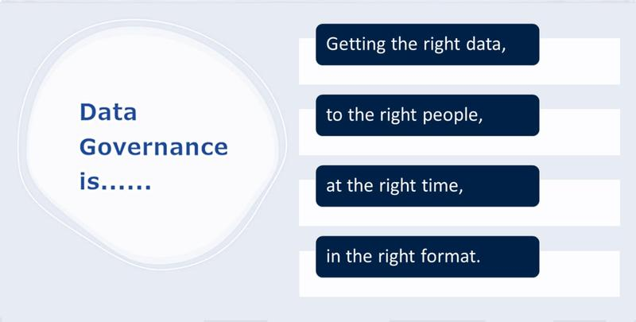
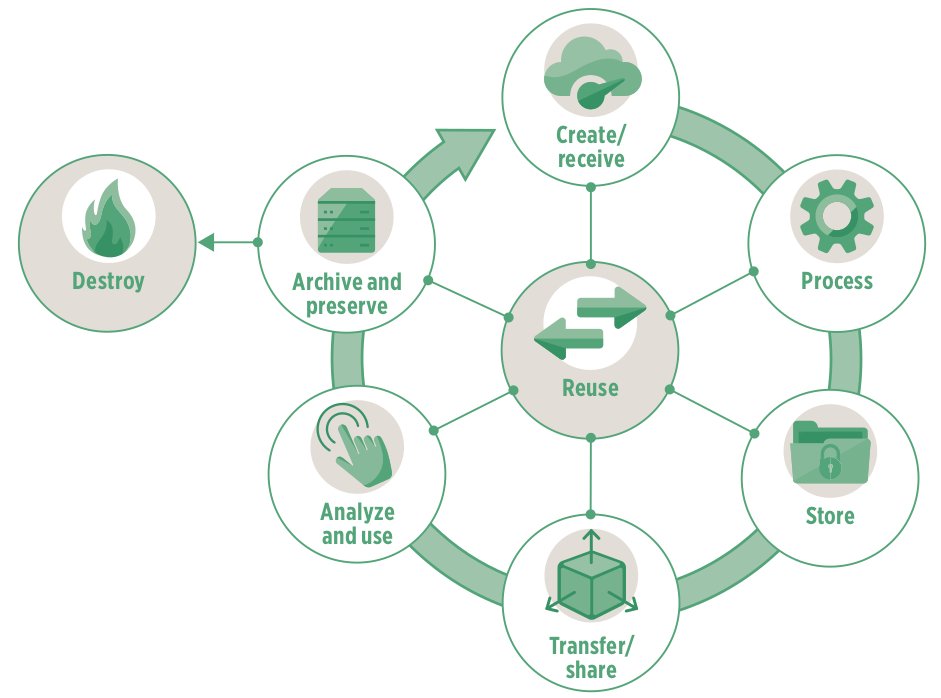
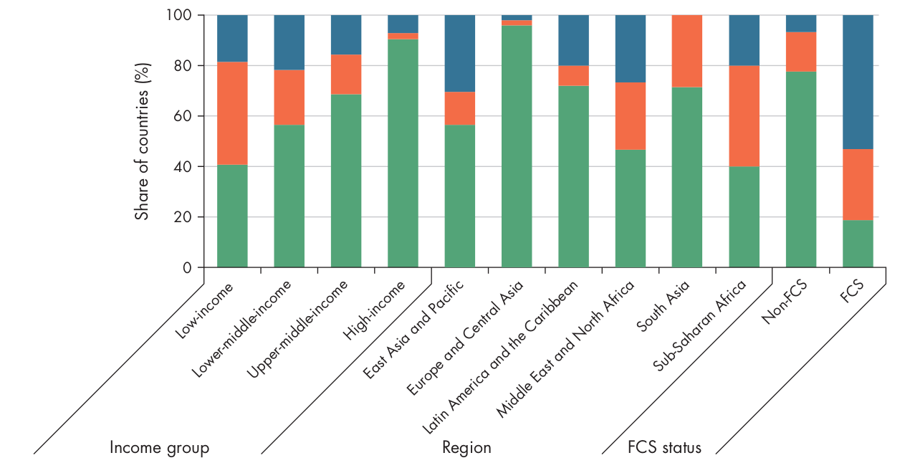
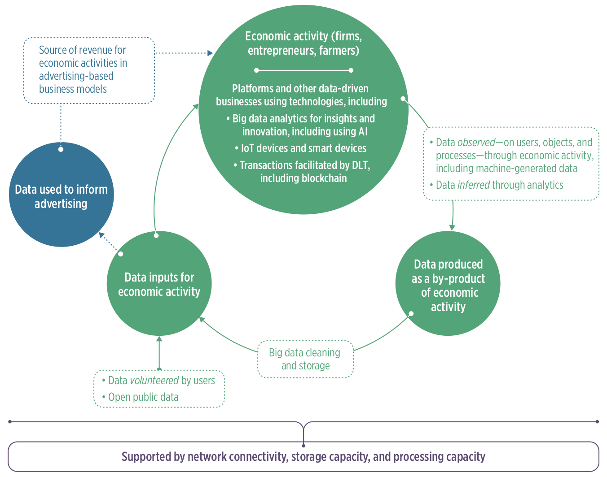
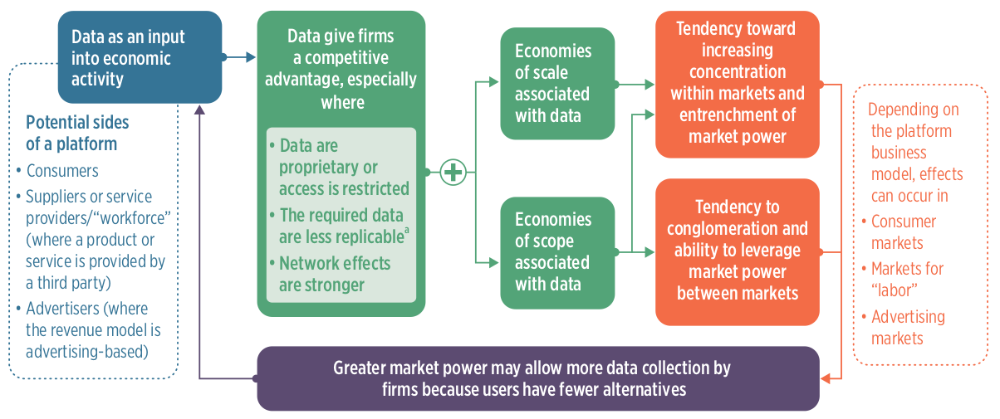

Buổi 1
Bức tranh toàn cầu về các tổ chức và khung khổ quản trị dữ liệu
![]()
Định nghĩa
Dữ liệu là gì?
“Khi chúng ta đề cập đến dữ liệu, chúng ta đang nói đến thông tin về con người, sự vật và hệ thống. … Dữ liệu về con người có thể bao gồm dữ liệu cá nhân, như thông tin liên hệ cơ bản, hồ sơ được tạo ra thông qua tương tác với dịch vụ hoặc web, hoặc thông tin về đặc điểm sinh học (biometrics) - và cũng có thể mở rộng đến dữ liệu cấp độ dân số, như thống kê dân số. Dữ liệu cũng có thể liên quan đến hệ thống và cơ sở hạ tầng, chẳng hạn như hồ sơ hành chính về doanh nghiệp và dịch vụ công. Dữ liệu ngày càng được sử dụng để mô tả vị trí, chẳng hạn nhưchi tiết tham chiếu không gian địa lý, và môi trường chúng ta sống, chẳng hạn như dữ liệu về đa dạng sinh học hoặc thời tiết. Nó cũng có thể đề cập đến thông tin được tạo ra bởi mạng lưới cảm biến càng phát triển tạo nên Internet of Things.”
- Chiến lược Dữ liệu Quốc gia của Vương quốc AnhQuản trị dữ liệu là gì?
Một hệ thống khung pháp lý vững chắc, hướng dẫn đạo đức, tiêu chuẩn và quy trình đảm bảo rằng dữ liệu của tổ chức luôn chính xác, nhất quán, an toàn và tuân thủ trong suốt vòng đời của nó.

Vòng đời dữ liệu là gì?

Dữ liệu ý định công khai so với dữ liệu ý định riêng tư
Dữ liệu ý định công khai
Dữ liệu ý định công khai là dữ liệu được thu thập cho mục đích công cộng.
Dữ liệu ý định công khai là nền tảng của các chính sách công và có thể đóng vai trò chuyển đổi trong khu vực công.
Dữ liệu ý định riêng tư
Dữ liệu ý định riêng tư là dữ liệu được thu thập bởi khu vực tư nhân trong quá trình hoạt động kinh doanh thông thường.
Dữ liệu ý định tư nhân có thể thúc đẩy đổi mới, giảm chi phí giao dịch và nâng cao năng suất, khả năng cạnh tranh và tăng trưởng kinh tế.
Hoạt động 1: Hãy cho tôi biết về dữ liệu của bạn
Hoạt động 1 - Cơ học
-
Vui lòng tham gia vào nhóm được phân công cho quý vị.
- TAMRI Hà Nội + TAMRI Thành phố Hồ Chí Minh
- Bệnh viện Tâm Anh Thành phố Hồ Chí Minh
- Bệnh viện Tâm Anh Hà Nội
- Eplus + SMART Research
- VNVC + Calif
- Sở Y tế (Hà Nội và Thành phố Hồ Chí Minh) + Sở Khoa học và Công nghệ Hà Nội
Hoạt động 1 - Cơ học
-
Mỗi cá nhân hãy ghi lại các từ khóa và/hoặc thuật ngữ/khái niệm chính mô tả bất kỳ một hoặc tất cả dữ liệu mà bạn làm việc với và/hoặc chịu trách nhiệm
- Ghi chú trên các thẻ meta được cung cấp;
- Sử dụng từ khóa hoặc cụm từ khóa, không sử dụng câu hoàn chỉnh;
- mỗi thẻ meta chỉ ghi một từ khóa hoặc cụm từ khóa;
- Bạn có thể sử dụng bao nhiêu thẻ meta tùy ý/cần thiết.
Hoạt động 1 - Cơ học
-
Đăng các thẻ meta của bạn lên tường hoặc bàn được chỉ định cho nhóm của bạn.
- Đảm bảo rằng các thẻ meta của bạn được tách biệt với các thẻ của những người khác trong nhóm;
- Đảm bảo rằng các thẻ meta của bạn được dán sao cho văn bản trên mỗi thẻ có thể đọc được (không để các thẻ chồng lên nhau).
Hoạt động 1 - Cơ học
-
Trong nhóm của bạn, hãy tìm một đối tác và thảo luận, mô tả cho nhau về dữ liệu mà bạn đang làm việc và/hoặc chịu trách nhiệm.
- Bạn sẽ có 5 phút để chia sẻ với đối tác của mình;
- Sau 5 phút, hãy tìm một đối tác mới và tiếp tục thảo luận và mô tả với nhau;
- Chúng ta sẽ thực hiện ba vòng thảo luận với đối tác trong nhóm.
Hoạt động 1 - Cơ học
-
Với một nhóm khác, hãy tìm một đối tác trong nhóm đó và yêu cầu họ thảo luận và mô tả cho bạn về dữ liệu mà họ đang làm việc và/hoặc chịu trách nhiệm.
- Các nhóm cụ thể sẽ được chọn để tiếp cận một nhóm khác;
- Các thành viên của nhóm đến thăm sẽ tìm một đối tác trong nhóm chủ nhà;
- Các thành viên của nhóm đến thăm sẽ hỏi đối tác của họ trong nhóm chủ nhà về dữ liệu mà họ đang làm việc và/hoặc chịu trách nhiệm. Họ sẽ có khoảng 5 phút cho cuộc thảo luận này;
- Sau 5 phút, các thành viên của nhóm đến thăm nên tìm một đối tác mới trong số các thành viên của nhóm chủ nhà và bắt đầu hỏi về dữ liệu mà họ đang làm việc và/hoặc chịu trách nhiệm;
- Sau ba vòng, nhóm chủ nhà sẽ được yêu cầu đến thăm một nhóm khác và thực hiện các bước tương tự, trong khi nhóm khách sẽ tiếp đón một nhóm khác.
Dữ liệu ý định công khai
Các loại dữ liệu ý định công khai
Dữ liệu hành chính
Dữ liệu điều tra dân số
Khảo sát mẫu
Dữ liệu do công dân tạo ra
Dữ liệu do máy tạo ra
Dữ liệu không gian địa lý
Tối ưu hóa giá trị của dữ liệu công cộng

Ba hướng tiếp cận để dữ liệu ý định công cộng tạo ra giá trị
Cải thiện việc cung cấp dịch vụ
Ưu tiên nguồn lực hạn chế
Giám sát chính phủ và trao quyền cho cá nhân
Khoảng trống trong dữ liệu ý định của công chúng
Phạm vi bảo hiểm không đủ
Thiếu tính kịp thời, tần suất và tính đầy đủ.
Khoảng trống lớn trong dữ liệu không gian địa lý ở các quốc gia có thu nhập thấp

Chất lượng dữ liệu kém
Thiếu tính chi tiết, độ chính xác và khả năng so sánh.
Thiếu phân tích dữ liệu chi tiết
Các quốc gia có thu nhập thấp có ít dữ liệu về nghèo đói có thể so sánh được.

Dữ liệu không dễ sử dụng
- Thiếu tính khả dụng, tính dễ hiểu và tính tương thích.
| Chỉ số | Thu nhập thấp | Thu nhập trung bình thấp | Thu nhập trung bình cao | Thu nhập cao |
|---|---|---|---|---|
| Điểm mở cửa (0–100) | 38 | 47 | 50 | 66 |
| Có sẵn ở định dạng có thể đọc được bằng máy tính (%) | 37 | 51 | 61 | 81 |
| Có sẵn ở định dạng không độc quyền (%) | 75 | 85 | 81 | 84 |
| Các tùy chọn tải xuống có sẵn (%) | 56 | 68 | 68 | 78 |
| Xem điều khoản sử dụng/giấy phép (%) | 11 | 19 | 22 | 44 |
Dữ liệu không an toàn để sử dụng
Dữ liệu không miễn nhiễm với ảnh hưởng từ các bên liên quan
Dữ liệu không được lưu trữ an toàn - tình trạng phổ biến trong cơ sở dữ liệu của chính phủ và khu vực tư nhân
Dữ liệu không được ẩn danh đúng cách
Tại sao vẫn còn khoảng trống trong dữ liệu ý định công khai
Thiếu hụt về tài chính
Thiếu hụt về năng lực kỹ thuật
Thiếu sót trong quản trị
Thiếu hụt về nhu cầu dữ liệu
Dữ liệu ý định riêng tư
Dữ liệu trong quá trình sản xuất

Vai trò của dữ liệu trong hoạt động kinh tế

Đầu vào dữ liệu cho hoạt động kinh tế
Thu thập dữ liệu của các doanh nghiệp - “dấu vết kỹ thuật số”
Sử dụng dữ liệu ý định công khai của doanh nghiệp
Các ngành được chuyển đổi nhờ việc sử dụng dữ liệu trong quá trình sản xuất
Tài chính
Nông nghiệp
Y tế
Giáo dục
Giao thông và logistics
Ngành tài chính
Các thuật toán đánh giá tín dụng thay thế - sử dụng dấu vết kỹ thuật số của cá nhân để đào tạo các thuật toán học máy nhằm xác định, đánh giá và cấp tín dụng.
Hệ thống thanh toán - thanh toán kỹ thuật số; thanh toán di động.
Sử dụng dữ liệu giao dịch cho phát triển sản phẩm - Dịch vụ Tourism Insights của Mastercard cho phép khai thác dữ liệu lớn để cung cấp thông tin về sở thích của du khách.
Công nghệ sổ cái phân tán - blockchain; loại bỏ các trung gian tài chính; tích hợp quy tắc vào hợp đồng thông minh giúp đơn giản hóa quy trình đàm phán và xác minh.
Ngành nông nghiệp
Cảm biến từ xa và hệ thống thông tin địa lý - phân tích dữ liệu này cung cấp thông tin chi tiết về hoạt động nông nghiệp; nông nghiệp thông minh
Internet vạn vật (IoT) và thiết bị nhúng để theo dõi điều kiện trang trại, vật nuôi và hoạt động nông nghiệp
Sử dụng dữ liệu để cung cấp đa dạng dịch vụ dọc theo chuỗi giá trị nông nghiệp
Sử dụng dữ liệu để cải thiện khả năng truy xuất nguồn gốc thực phẩm
Giáo dục
Công cụ hội nghị truyền hình/giao tiếp video
Nền tảng học tập bổ trợ kỹ thuật số
Giáo dục thích ứng thông minh
Ngành vận tải và logistics
Kết nối vận tải hàng hóa kỹ thuật số
Logistics chuyển phát nhanh kỹ thuật số
Hệ thống chuỗi lạnh tích hợp IoT
Rủi ro đối với cấu trúc thị trường từ các công ty nền tảng

Rủi ro và kết quả tiêu cực của các doanh nghiệp dựa trên dữ liệu
Tăng khả năng xuất hiện của các doanh nghiệp chiếm ưu thế
Tiềm năng khai thác cá nhân
Tiềm năng gia tăng bất bình đẳng trong và giữa các quốc gia

Tâm Anh Oxford Partnership